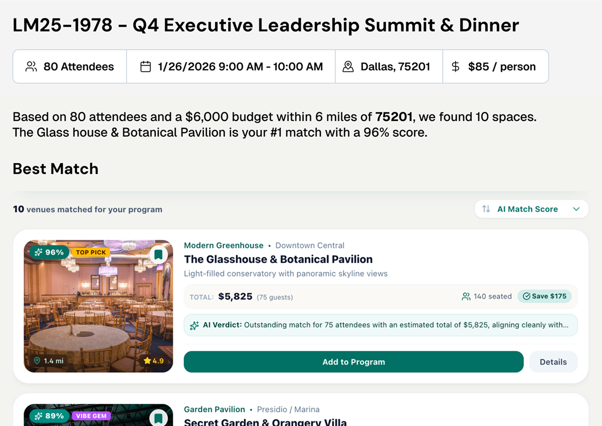
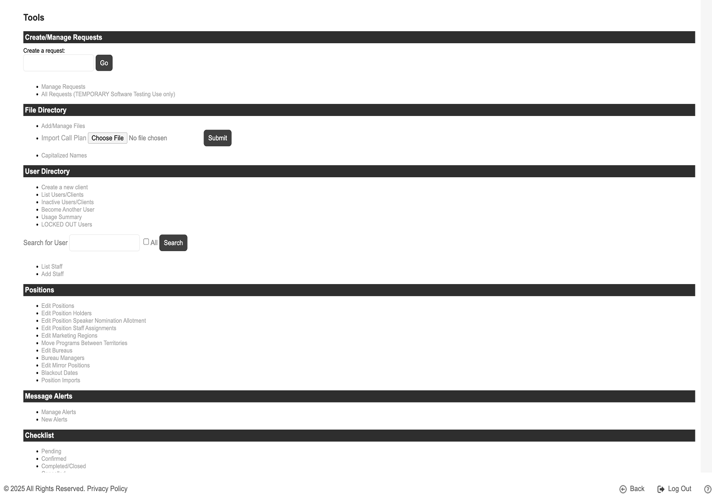
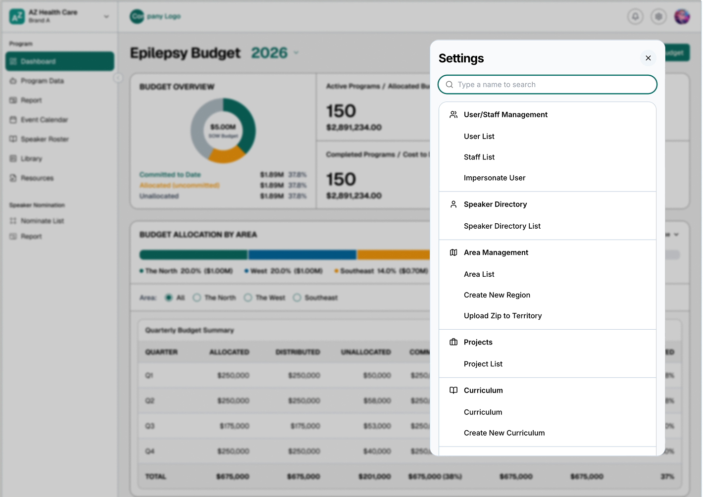
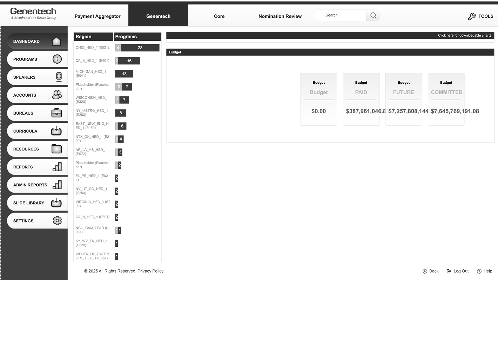
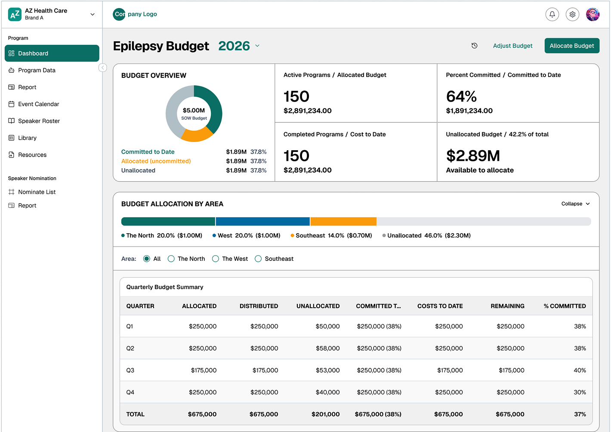
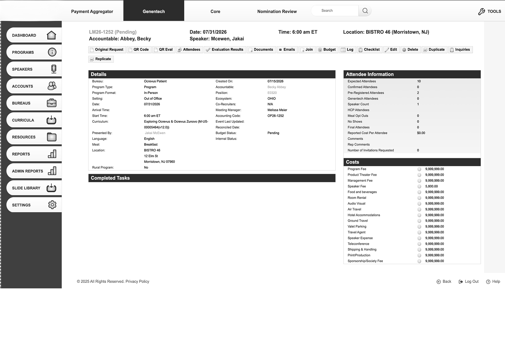
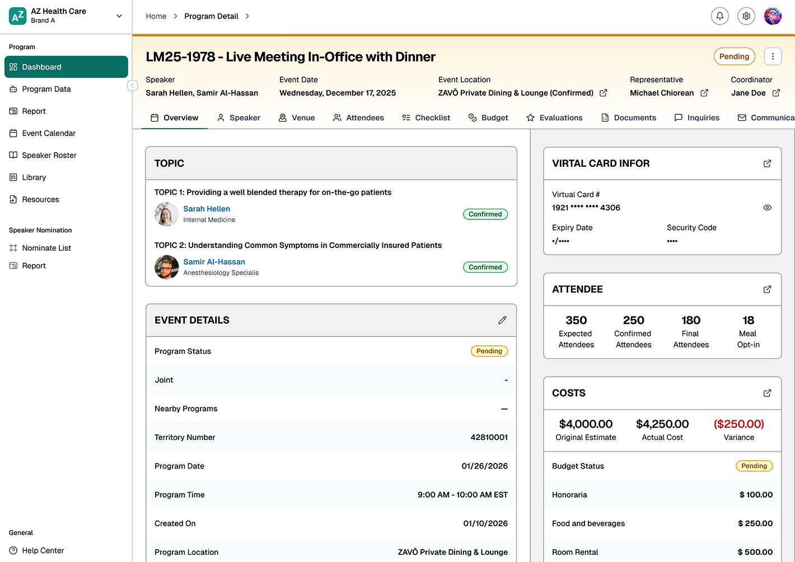
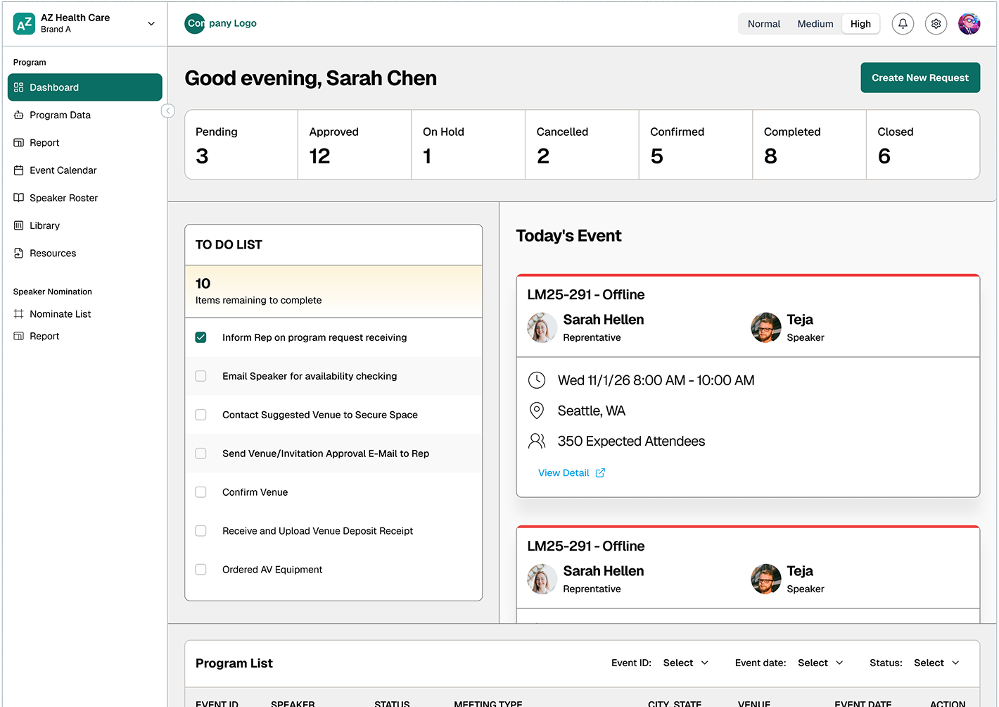
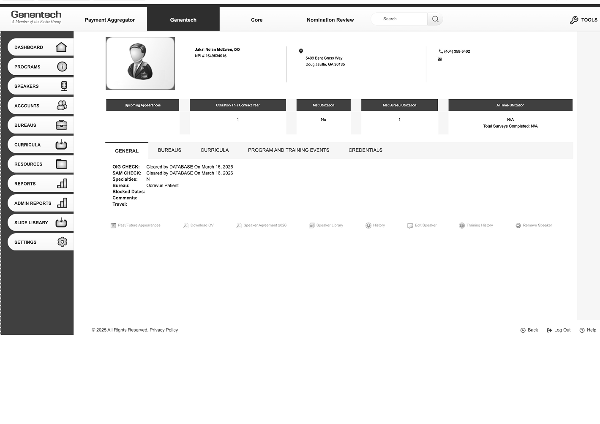
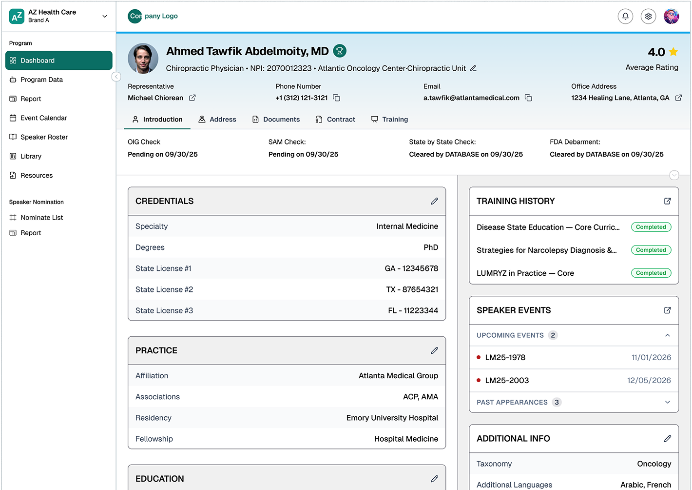

Overview
Figures & Pain Points
Seventeen roles touch a single speaker program, each with its own approval gate — and the contract behind it puts a deadline on every handoff between them.
793
programs ran through this process in a year (client system, 2025)
10
handoffs per program carry a contractual deadline, from confirming a speaker to closing the books (client system)
3% → 33%
of programs closed inside the contractual thirty days, 2024 against 2025 (client system)

The same program record means three different things at once — a request waiting on approval, an audit record, and a set of charges against a budget line. Nobody could say where a program was without asking four people.

The real cost sat in accounting. Reconciliation ran daily, by hand, matching card expense reports against cost items on a report of 77 to 102 columns depending on the tenant. Something that wide, run that often, is where the money goes.

It ends in a federal filing. Payments to doctors are reported to the government, so an approval chain nobody can trace is a legal risk rather than a hassle — which is why every role carries an access matrix and an audit-trail requirement.
Nobody could say where a program was
A speaker program looks like one event and works like a supply chain. A rep nominates a doctor, a manager approves, compliance checks the engagement, a coordinator books travel, accounting settles the fee against a budget set months earlier. Every handoff used a different tool and a different idea of what "done" meant.
Nobody owned the whole thing, so nobody could say where a program was without asking four people. That is the problem underneath every number on this page — and it is why the work started with a map rather than a screen.
Role & permission
Most used
Has the permission
Does not
Hover a block to read the permission.
User overview
User
Division Manager, Region Manager, Brand Manager, Home Office
Responsibility
Approve the programs and speakers the field puts up, keep an eye on budget, and keep each level below them in line with goals.
Permission
All four initiate and approve programs and speakers. Region Manager adds the global dashboard. Brand Manager and Home Office also counter-sign contracts, manage brand budgets and approve inquiries.
User
Coordinator, Bureau Manager, Project Team, Administrator, Super Admin, Accounting Team
Responsibility
Run the event — hotel, travel, materials, venue, reminders — then settle what it cost and reconcile it against the card and accounting records.
Permission
Coordinator submits inquiries and expenses; Bureau Manager, Project Team, Administrator and Super Admin approve and review them. Only the Accounting Team reconciles, or sees card details.
User
Compliance, Auditor
Responsibility
Check every engagement against medical regulation and company policy, and keep the audit trail.
Permission
Read the program calendar, speaker roster and library. Change nothing.
User
Speaker, Attendee
Responsibility
Present to the room, or register for it, turn up and sign in. The attendee was not a role in the legacy portal at all.
Permission
Speaker signs the contract, prepares slides, submits expenses and tracks honoraria. Attendee registers, signs in and gives feedback. Neither sees a budget or anyone else’s programs.
The system was the last to know
I mapped all 17 roles, wrote personas for the rep, the coordinator and the speaker, and drew an as-is and a to-be flow for each role. Then I checked those flows against the client's own program data. Four things stood out.
1
One record, three meanings
To a rep a program is a commitment already made — the speaker said yes weeks ago. To compliance it is an audit record. To accounting it is a set of charges against a budget line. Same object, three jobs.
2
The cost sat in accounting
Reconciliation ran daily, by hand, matching card expense reports against cost items on a report of 77 to 102 columns depending on the tenant (client spec). Something that wide, run that often, is where the money goes.
3
82% arrived already confirmed
On four programs in five the rep had confirmed the speaker by phone or text before the request form was opened, and the contract exempts exactly those from its five-day confirmation deadline. The system wasn't running the process. It was certifying one that had already happened elsewhere (client system, 2025).
4
The checklist lived inside the program
Every program carried its own checklist, one stage per status, and the only place to see it was inside that program. With 32 programs dated in May alone, finding out what was still open meant opening them one at a time.
Key figures
32
programs dated in May 2026, more than ten times January (client system)
41
notes written on an average program, spread across seven separate threads — venue, catering, AV, sign-in, budget, speaker, programme (client system)
28
checklist items across a program's pending and confirmed stages, many of them no more than a note that an email went out (client system)
86%
of programs still carried an unfinished checklist stage, counted 251 working days after the event (client system, 2025)
The decision: what not to build first
A backlog spread over seventeen roles and thirteen workflow areas isn't a ranking problem. Slice it by role and you ship a rep experience that dead-ends at an approval nobody can give. Slice it by feature and you ship a budget module with no program to attach it to. So the work runs in phases, and each phase gets its own must, should, could and won't.
Feature prioritization
With the order settled,
the question was how fast each phase could ship
Every phase went through the same four steps: discovery, validation, build and launch. With AI working inside each of them, those four close into two. Work out what to build and test it. Then build it, launch it and scale it.
Discovery
Discover, Validate, and experiment
Validate
Build
Launch
Build, launch and scale
01 Discovery
- Map all 17 roles and every handoff between them
- Write personas for a rep, a coordinator and a speaker
- Draw an as-is and a to-be flow for each role
02 Validate
- Check what people said against the client's own records
- Give each phase its own must, should, could and won't
- Keep budget in the MVP, not a later release
03 Build
- Build the program-request spine first
- Give the four roles that own the record the whole flow
- Redesign each screen against the one it replaced
04 Launch
- Go live in June 2026, beside the old system
- Leave programs already in flight where they started
- Hold the client's 30-day closing rate as the baseline
AI enablement across product screens, sprints and phases
Is this flow critical to the customer's business?
Discovery,
validate,
and experiment
AI surfaces it, the domain owner validates it.
Single lane. The old system is the spec.
01. Reverse-engineer with the people who own the domainAI + Human
02. Set strategy and vision
03. Empathize — talk to real users
04. IdeateAI + Human
05. Experiment — test the assumption before buildingAI + Human
01. Read the existing codebaseAI
02. Infer the business logic in productionAI
03. Draft the new flow and screens from that logicAI
Build,
launch
and scale
AI assists, human signs off.
AI builds it, the demo is the gate.
01. CodeAI + Human
02. BuildAI
03. Test — human writes the cases for the risky branchesAI + Human
04. Deploy behind a flag, staged rollout
05. Release with a way back
01. Build it and demo to the customerAI + Human
02. Customer approves
03. Apply into the new systemAI
Customer adoption and product usage analyticsAI + Human
Critical: a human owns every decision, AI owns the labour.
Not critical: AI owns the path, the customer owns the gate.
What the loop looks like on a real feature
Whichever answer the toggle gives, the loop underneath is the same. AI gets an idea to a working POC in days, people test it, and only what passes gets built properly.
The model
AI drafts each direction from the spec and the Figma file as working code, on the real tokens. Each one goes out as a link people can click. A concept that passes the gate merges into the feature branch and gets rebuilt properly. One that fails just closes. Click a commit for what happens there.
main
dev
feature
design / concept
design / components
design / tokens
merge
sync pull
abandoned
Click a commit on the graph to see what happened there — who was involved, and what it produced.
Handoff process
Four artifacts, four owners, each written from the last one and drifting from it the moment it was.
A specification document
A design file redrawing what the document said
Tickets restating the design in a third vocabulary
Test cases written against whichever of the three was newest
One branch carrying the spec, the screens and something that runs. Reviewed once, on the diff.
The spec, beside the code it specifiesAI + Human
The screens, as components rather than pictures of componentsAI + Human
A prototype a client can click throughAI
The review, once, where the change actually is
Artifact
10 weeks
8 May to 15 July 2026, spec and build running together rather than in sequence (counted)
17
commits, each one a reviewable slice of the working prototype (counted)
~21,350
lines of a running multi-tenant prototype (counted)
That is what the loop above buys. Not fewer people and not less thinking — a client could open the thing and disagree with it while the specification was still being written, which is the only kind of disagreement that is cheap to act on.
A look inside the platform
A selection of screens from the release: sign-in, the dashboards, program requests and detail, budget, speaker profiles, the event calendar and post-event evaluations.


The screens that shipped,
and what they replaced
The map said what to build. These are the screens that came out of it, each one against the thing it replaced — where there was something to replace. Drag the handle to move between the two.
- Venue Search
- Search Optimization
- Budget & Allocation
- Event Calendar
- Program Detail
- REP Dashboard
- Speaker
Venue Search AI · New
A new feature, and the first one built on AI. It reads the program, searches Google for venues that fit, and hands the coordinator a shortlist. Before, the coordinator did that search by hand.
Findings
- Coordinators searched Google by hand and built the venue list themselves, one program at a time
- Nothing checked a quote against the program’s own budget
- Whatever got chosen never made it back onto the record
Solution
- AI takes the program’s headcount, budget and location and searches Google for venues that match
- Results come back as a ranked list, each with a total for that headcount and what it leaves on the budget
- Add to Program writes the venue straight onto the record

Search Optimization
Every administrative action in the old system lived on one page called Tools. Finding anything meant knowing its name first.
Findings
- One flat list under six black headers — no grouping by what you were managing
- Changing a setting meant leaving the screen you were on
- The search box looked up users, and only users
Solution
- A settings panel that opens over the screen you are already on
- Type-to-search across every object, not just people
- Grouped by what is being managed — users, speakers, areas, projects, curriculum


Before AfterBudget and Allocation
Allocation runs top-down and charges run bottom-up. The two have to meet on the same record, which is why this could not be deferred to a later release.
Findings
- Four totals in grey boxes, with nothing tying them to a program or a region
- Regions listed with program counts; budgets listed somewhere else entirely
- No way to see what was still unallocated without exporting
Solution
- Committed, allocated and unallocated on one overview
- Allocation by area, filterable down to a single region
- A quarterly table carrying allocated, distributed, committed, costs to date and remaining


Before AfterEvent Calendar
Every program that carries a date, on one calendar — because “where is this program” was usually a question about when.
Findings
- Programs were rows in a list; nothing showed what was happening on a given day
- Two programs on the same date in the same territory only surfaced by accident
- Checking a speaker’s availability meant opening each program in turn
Solution
- Month, week and day views over the same set of programs
- A day opens to everything on it, colour-coded by state
- Each entry carries the rep, the speaker, the time, the location and expected attendance

Program Detail
The record all seventeen roles open. Who speaks, where, against whose budget, and what state the thing is in — it has to be readable in one pass or the other sixteen people go and ask someone.
Findings
- Status sat inside the details table, not on the record
- Eighteen unlabelled actions in a strip across the top, in no order
- Details, attendees and costs were three flat tables with nothing tying them together
Solution
- Status and the four people who own the program promoted into the header
- Actions split into tabs, one per thing you would come here to do
- Costs carry the estimate, the actual and the variance side by side


Before AfterRepresentative Dashboard
New in this release. What a representative sees on opening the platform: how many programs sit in each state, and what the next action is on the ones that are moving.
The next actions it surfaces
01. Inform the rep a program request has come in
02. Email the speaker to check availability
03. Contact the suggested venue to hold the space
04. Send the venue and invitation approval to the rep
05. Confirm the venue and upload the deposit receipt

Speaker Profile
A speaker is a compliance object before they are a person on a stage. Payments to them end up in a federal filing, so the checks are the profile, not an attachment to it.
Findings
- Compliance checks read as plain text lines with no date and no state
- Five utilisation boxes across the top, most of them reading N/A
- Eight actions greyed out along the bottom of the page
Solution
- OIG, SAM, state-by-state and FDA debarment surfaced with the date each was cleared
- Credentials, practice and education as cards, editable in place
- Training history and upcoming appearances beside the profile instead of behind a tab


Before AfterLive since June, running beside the system it replaces
The platform went live in June 2026 and runs in parallel with the system it was built to replace — programs already in flight stay where they started. It hasn't been through a full measurement cycle yet, so outcome numbers will come after the first one.
What the old process cost is on record, because the client measured it against its own contract. Ten handoffs carry a deadline; the one the contract prices hardest — closing a program's books inside thirty days — was met on a third of programs. That is the gap the work was aimed at, and it is a baseline, not a result. The climb from three percent to thirty-three happened across 2024 and 2025, before anything I built was switched on.
Three measures are the ones I'd track. Closing rate against that thirty-day deadline first, because it is the one with money attached. Then coordinator hours to run one program end to end, and the exception rate — compliance issues raised after the fact instead of caught in the flow.
What I'd carry into the next project
Ask for the client's own numbers early. The spec had as-is and to-be flows for all 17 roles. The client had also been measuring itself against ten contractual deadlines, in an existing report. Asking for it in week one lets the sequencing argument rest on their numbers as well as the diagram.
Make code the source of truth on day one. A check caught 17 of 18 status tokens out of sync. Naming code as the source of truth from the start keeps that drift from building up.
Name the "why now" for this quarter. Compliance risk is a standing reason, true every quarter. Next time I'd also name what makes it urgent this quarter, since that's the first question senior stakeholders ask on a project this size.